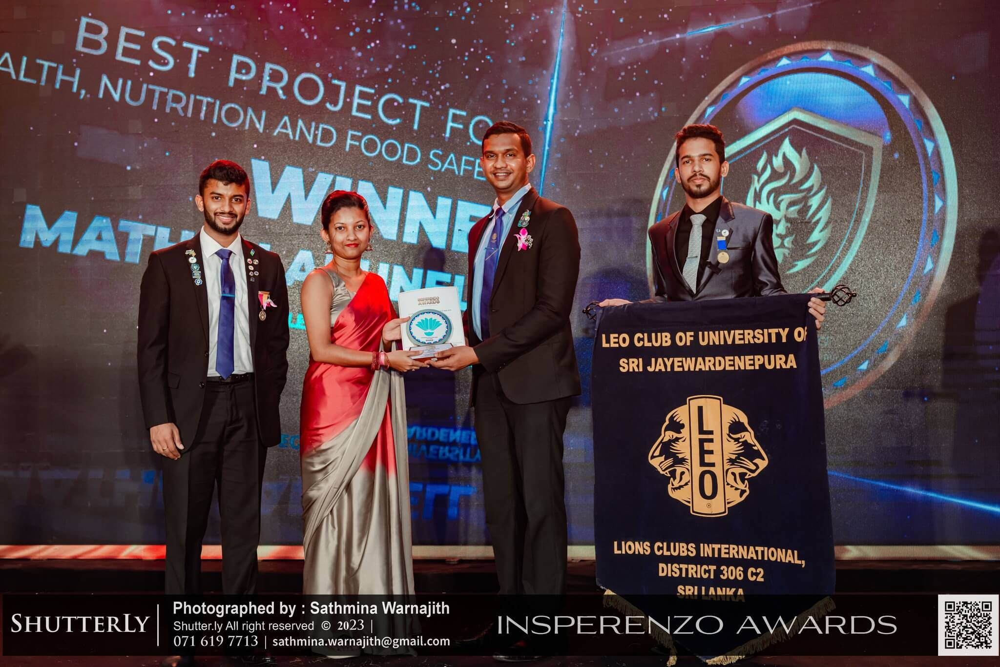
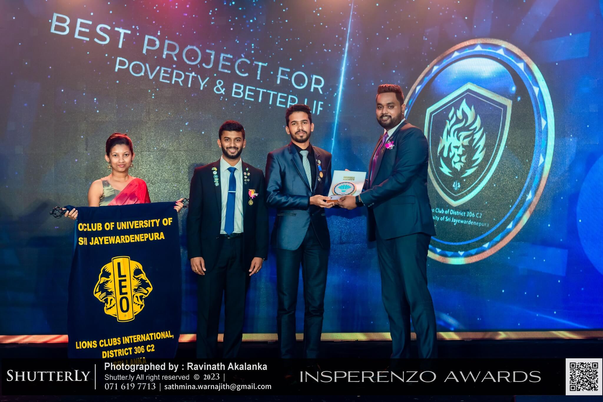

<!DOCTYPE html>
<html lang="en">
  <head>
    <meta charset="UTF-8" />
    <meta name="viewport" content="width=device-width, initial-scale=1.0" />
    <title>J'pura C2 Leos</title>
    <link rel="icon" href="../image/logo.jpg" type="image/png" />
    <link
      rel="stylesheet"
      href="https://cdnjs.cloudflare.com/ajax/libs/font-awesome/5.15.4/css/all.min.css"
    />
    <link rel="stylesheet" href="../css/style_p.css"/>
  </head>
  <body>
    <a href="../project.html" id="backHome">
      <i class="fas fa-arrow-left"></i>
    </a>
    <p id="title"> Project Name: Maathru Arunalla</p>
    <br>
    <p>Amidst the economic challenges Sri Lanka faced in recent years, we initiated “Maathru
        Arunalla" a series of projects, which focused on pregnant mothers from low-income families in
        the Horana area. Our dedicated efforts targeted this vulnerable group, providing essential items
        such as pampers, nets, baby napkins, and other necessities for newborns, along with nutritional
        support for the mothers. This project was led by Project Chairman Leo Oshadi Dilthara and it
        aimed to alleviate the burdens faced by these families and promote maternal and child wellbeing. This project was able to secure the winning award for two categories, “Best Project for
        Health, Nutrition and Food Safety” and “Best Project for Poverty and Better Life” during the
        Insperenzo Awards; 18th Annual District Conference of Leo District 306 C2.</p>
      <br>
      <div class="ks">
        
        
       <!--
       -->
      </div>

   
  

  </body>
</html>
